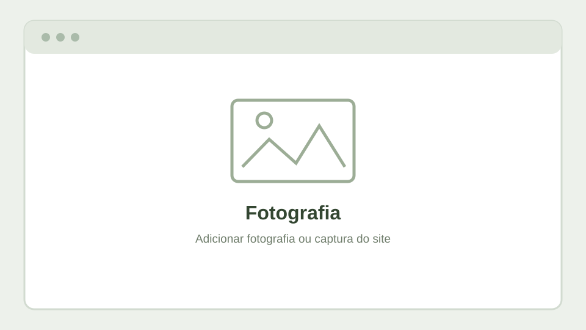

Sensores CCD (I)
Análise da Nikon D70 e reflexão sobre a utilização atual de câmaras digitais com sensores CCD.
11 fevereiro 2025 · Artigo originalWiki
Fotografias, projetos visuais e artigos publicados, integrados no mesmo estilo do CV e da Wiki.
Espaço dedicado à fotografia, à técnica e ao olhar sobre os temas fotografados. Poderá reunir seleções de trabalhos, notas sobre equipamento, processos de edição e artigos do site de fotografia.
Seleção de análises, experiências e galerias de Miragens.org. Inclui fotografia digital e analógica, equipamentos e trabalhos de autor.
Análise da Nikon D70 e reflexão sobre a utilização atual de câmaras digitais com sensores CCD.
11 fevereiro 2025 · Artigo originalNotas sobre simulações de filme na Fujifilm X-T1 e particularidades do balanço de brancos.
6 julho 2025 · Artigo originalPublicação de uma galeria fotográfica dedicada ao Porto em preto e branco.
25 outubro 2025 · Artigo originalEspaço preparado para futuras capturas de ecrã e imagens selecionadas, retiradas dos projetos e dos artigos originais.
